1、循环语句对照表
易语言 火山 判断循环首/尾 判断循环 循环判断首/尾 循环判断首/尾 计次循环首 计次循环 变量循环首 循环 到循环尾 到循环尾 跳出循环 跳出循环
2、判断循环首/尾
在火山中名叫“判断循环”，与易语言相比并无判断循环尾的字样，也不需要输入。
易语言和火山对比如下：
易语言：
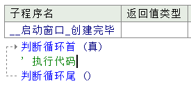
火山：
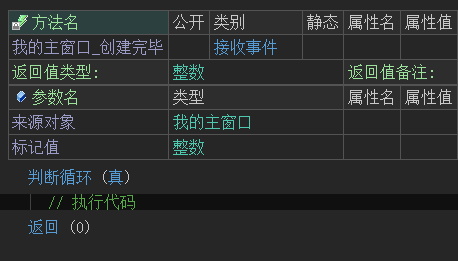
火山视窗应用样例：
在本语句的子语句体内对“计数”变量进行累计+1，并输出计数结果，实现正向计数效果。
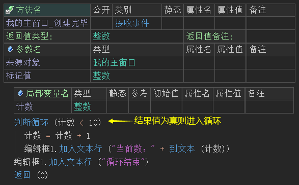
最终利用本语句实现了正向计数效果。
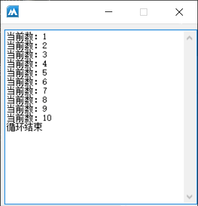
同理，也可以实现逆向计数如下所示：
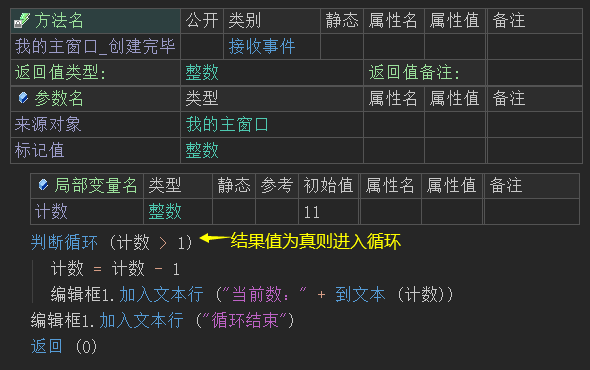
最终实现了逆向计数。
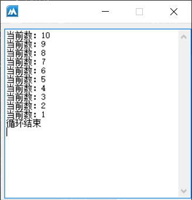
3、循环判断首/尾
本语句与易语言的区别在于，易语言会自动生成语句尾，火山暂时需要手动输入。
易语言和火山对比如下：
易语言：
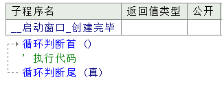
火山：
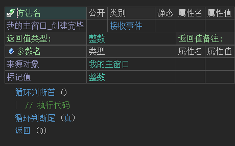
火山视窗应用样例：
在本语句的子语句体内对“计数”变量进行累计+1，并输出计数结果，实现正向计数效果。
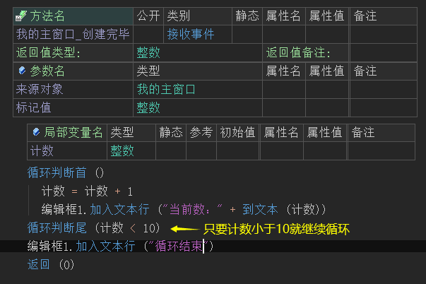
最终利用本语句实现了正向计数效果。
同理，也可以实现逆向计数如下所示：
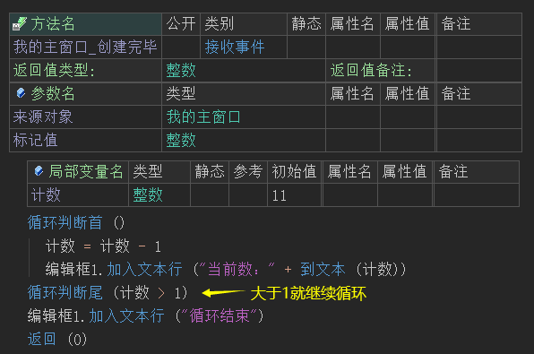
最终实现了逆向计数。
4、计次循环首/尾
本语句在火山中名叫“计次循环”，并且只有一个参数，且不需要提供计次循环尾。
帮助页如下图：
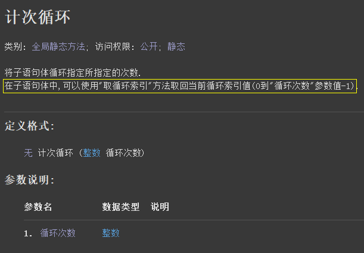
在易语言中需要手动定义计数变量，而在火山中则可以省略此步骤，可以利用其内置方法“取循环索引()”代替计数变量。
易语言和火山对比如下：
易语言：
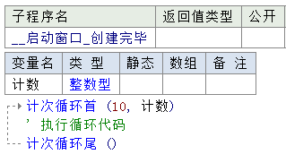
火山：
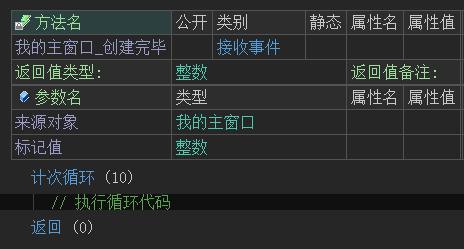
火山视窗应用样例：
利用本语句循环10次，取出循环索引到编辑框中。
注：在火山中循环索引从0开始，如果需要移植易语言代码到火山，务必注意循环计数问题。
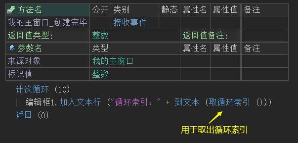
最终循环索引会依次显示在编辑框中。
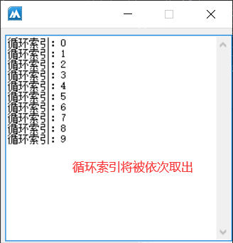
在火山中额外提供了“逆向计次循环”方法，用于逆向循环，通过“取循环索引()”方法可以直接取出逆向值。
应用样例：
利用本语句逆向循环10次，取出循环索引到编辑框中。
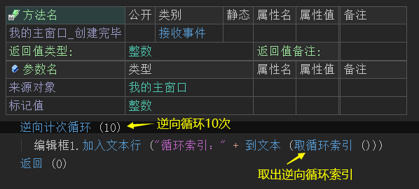
最终循环索引会逆向依次显示在编辑框中。
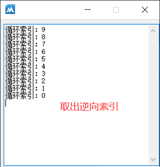
取循环索引方法的注意事项如下：
1、本方法只能用于“计次循环”或“逆向计次循环”的子语句体中使用，如下图所示为错误的。
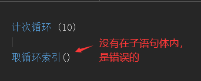
2、如果有多层循环嵌套，本方法只能取出最近层循环的索引值，无法取出其它循环层的循环索引。
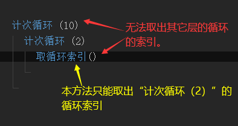
5、变量循环首/尾
本语句在火山中名叫“循环”，且不需要输入循环结束语句。其参数数量和作用也和易语言中一致，但顺序不同，对照表如下：
注意：在火山中第三个参数和易语言中的第四个参数作用一致，而火山第四个参数则和易语言中第三个参数作用一致。
易语言变量循环首 火山循环 注释 参数1： 变量起始值 变量起始值 在易语言中默认为1。
而火山中如果本参数被忽略默认为0。
参数2： 变量目标值 变量目标值 在易语言中本参数不可忽略。
在火山中如果被忽略默认值为1。
参数3： 变量递增值 循环变量 在易语言中变量递增值的默认为1。
在火山中循环变量如果留空，将使用一个内置的临时变量。
参数4： 循环变量 变量递增值 在易语言中循环变量可以被省略，如果被省略将使用内部临时变量、
在火山中变量递增值，如果被省略默认使用1。
在火山中使用时，除了需要注意参数顺序和默认值之外，还需要注意循环变量参数的问题。
此参数在易语言中是从1开始计数，火山中是从0开始计数。
正向计数对比如下：
易语言示例：
可以看出易语言的计数从1开始。
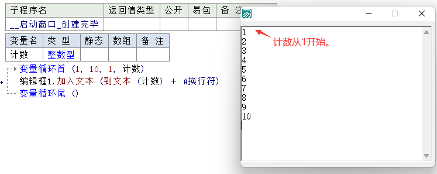
火山示例：
而在火山中想要实现易语言一样的效果，需要对计数变量进行+1操作。
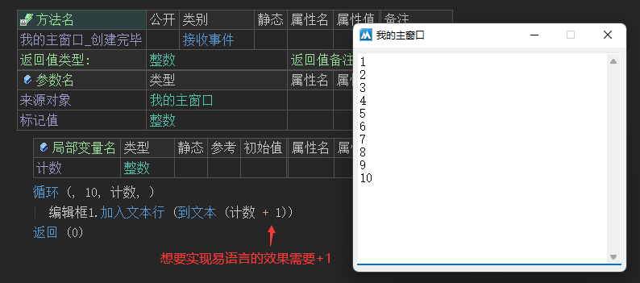
逆向计数对比如下：
易语言示例：
易语言中的“变量目标值”参数，超过此参数时才会跳出循环。
因此当“变量起始值”为10，“变量目标值”为1，“变量递增值”为-1时就可以实现从10到1的逆向输出。
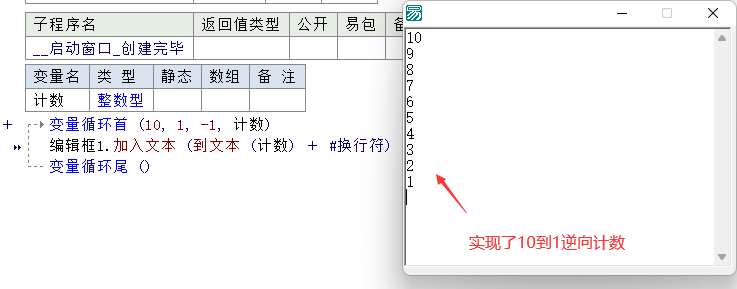
火山示例：
在火山中想要实现同样的效果，必须将“变量目标值”参数设置为0，因为火山中的规则是，大于等于此值时才会跳出循环。
如果要移植易语言代码到火山，务必要注意这一点问题。
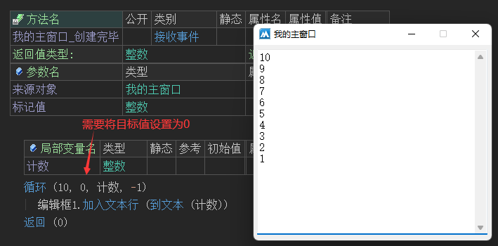
利用其循环变量的特性，还可以实现循环正/逆向取出数组成员内容，如下：
(1) 实现正向遍历数组成员，示例如下：
循环语句的参数1、4忽略、参数2提供数组成员数、参数3提供循环变量，就可实现正向遍历输出数组成员。
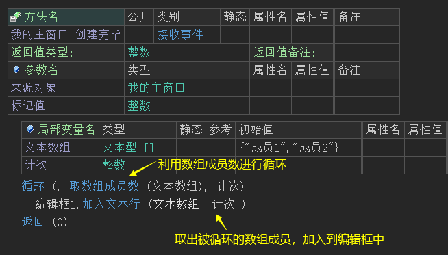
最终数组所有成员将被输出到编辑框中显示。
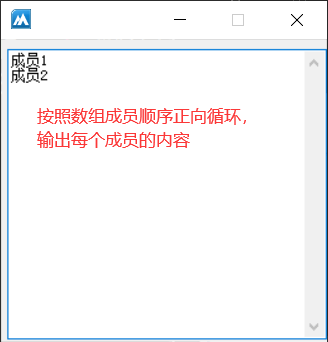
(2) 实现逆向遍历数组成员，示例如下：
循环语句的参数1提供数组成员数、参数2提供0、参数3提供循环变量、参数4提供-1，就可实现逆向遍历输出数组成员。
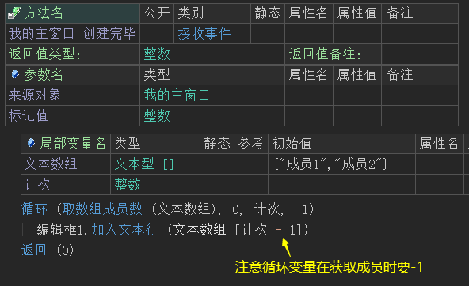
最终数组所有成员将被逆向输出到编辑框中显示。
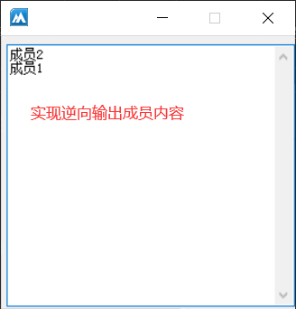
8、跳出循环
本关键字的作用和易语言同名关键字一致，用于转移当前程序执行位置到当前所处循环体尾部的下一条语句处，可用于所有循环语句。
如下图所示，当循环索引为5时执行跳出循环。
注：和易语言相比在火山中本关键字不需要输入括号。
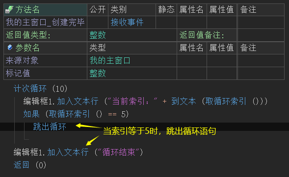
最终循环提前结束。
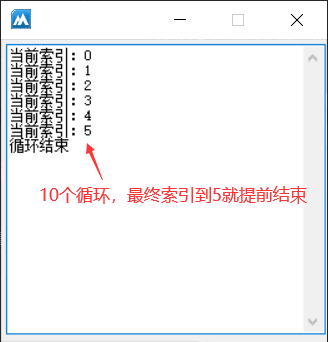
9、到循环尾
本关键字的作用和易语言同名关键字一致，转移当前程序执行位置到当前所处循环体的尾部。
示例：
注：和易语言相比在火山中本关键字不需要输入括号。
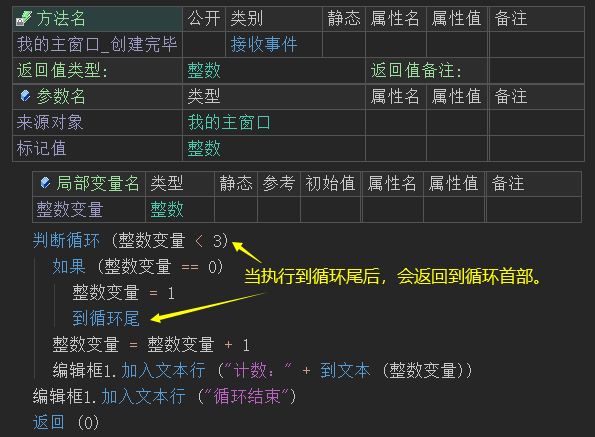
因循环体内对“整数变量”进行了一次判断，并执行了一次“到循环尾”相当于跳过了一个循环，所以最终会输出2、3。
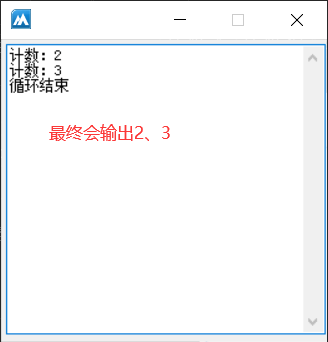